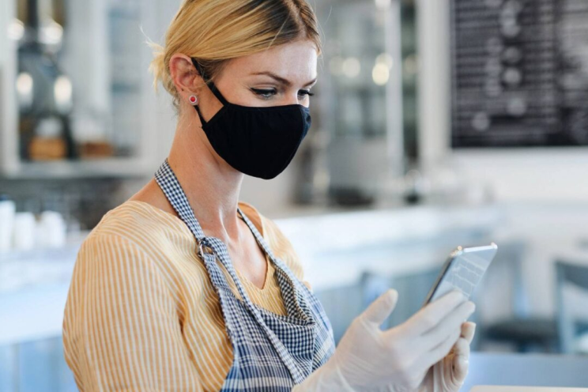

I’m a UX/UI Engineer based in Ann Arbor, Michigan where I’ve joined an amazing team at AdAdapted, Inc. My work focuses on optimizing the connections between advertising technology and society by launching user-centered perspectives to the forefront of innovative product design. I graduated from the University of Michigan’s School of Information in 2021 with a B.S. degree in Information and a concentration in User Experience Design. I also completed a Spanish minor and Minor in Business from the Ross School of Business with an interest in marketing and product management. I was heavily involved on campus as a member of the University of Michigan Varsity Cheerleading and Club Gymnastics teams.
My Projects

Farm Labor Advocacy
Improving the mobile UX of an advocacy network’s internal application for organizing labor camp data and coordinating outreach efforts.
Better Conversations
Conducting UX Research at UMSI to encourage more deliberate cross-partisan political conversations on social media.

View More
AXS Pal – Interaction Design
Applying interaction design principles to prototype a map application that prioritizes accessibility and COVID safety information.